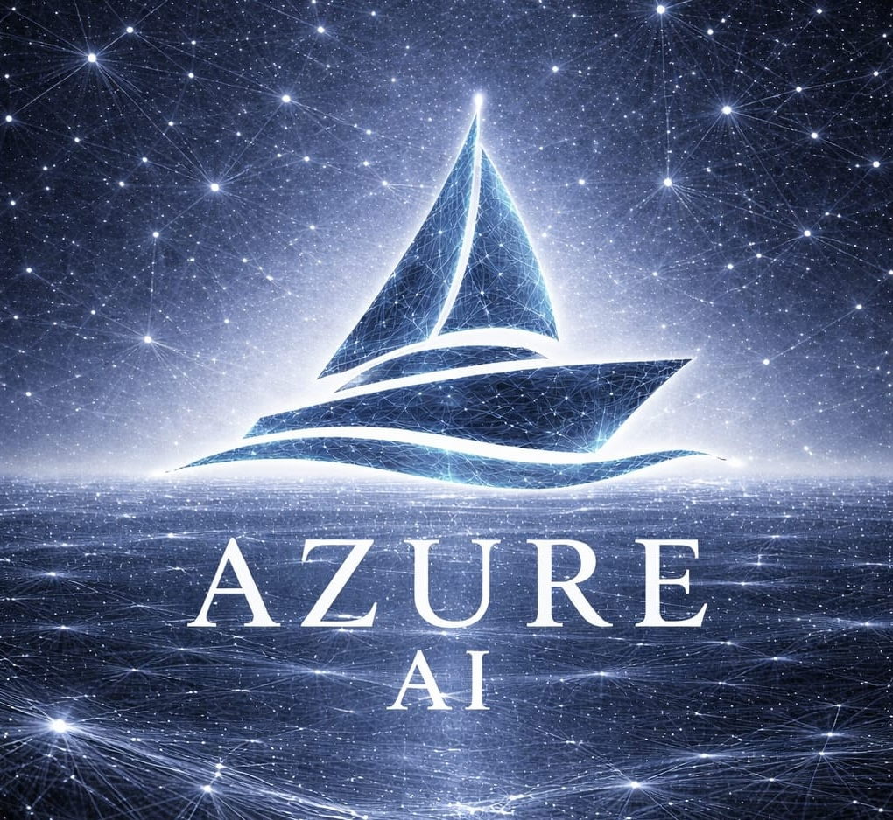
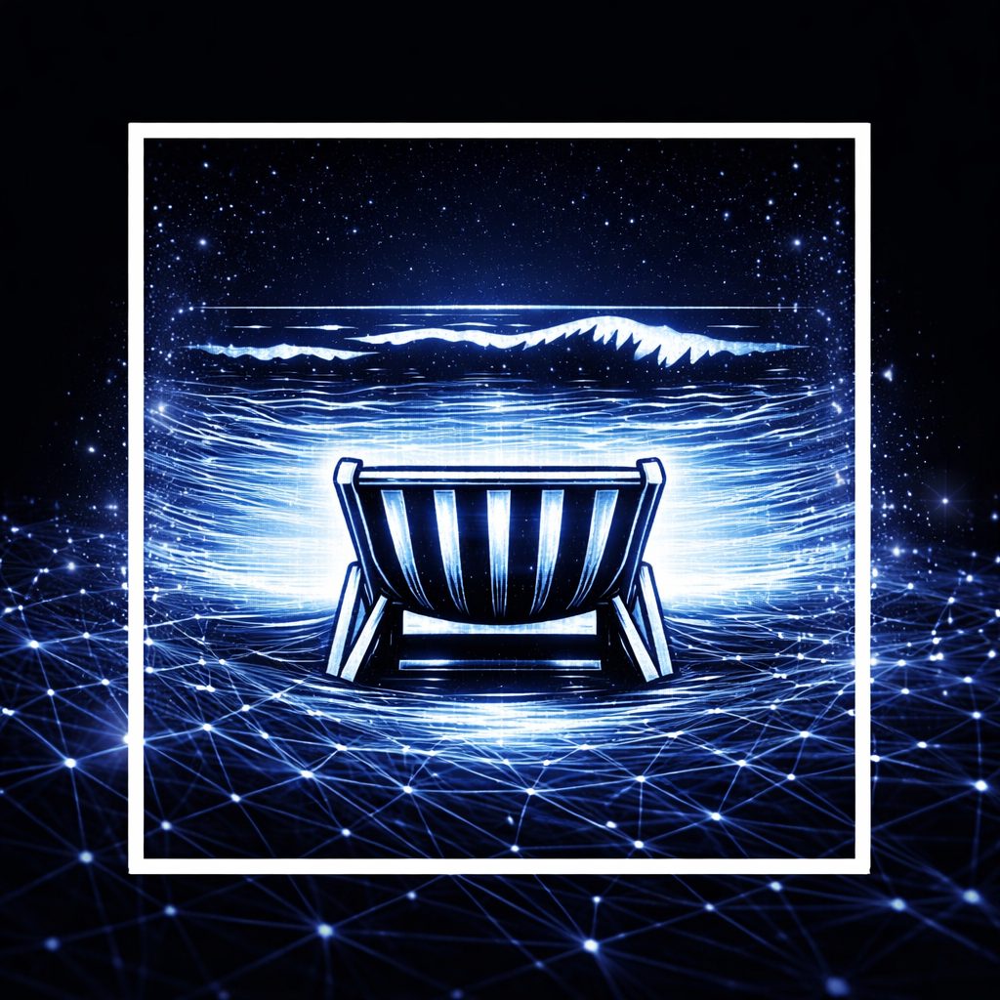
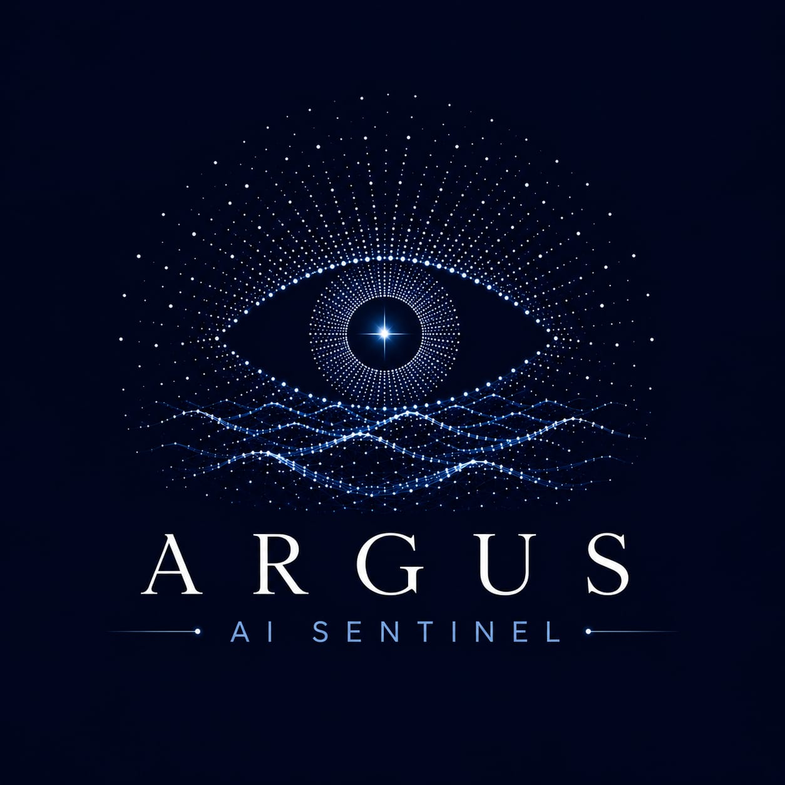
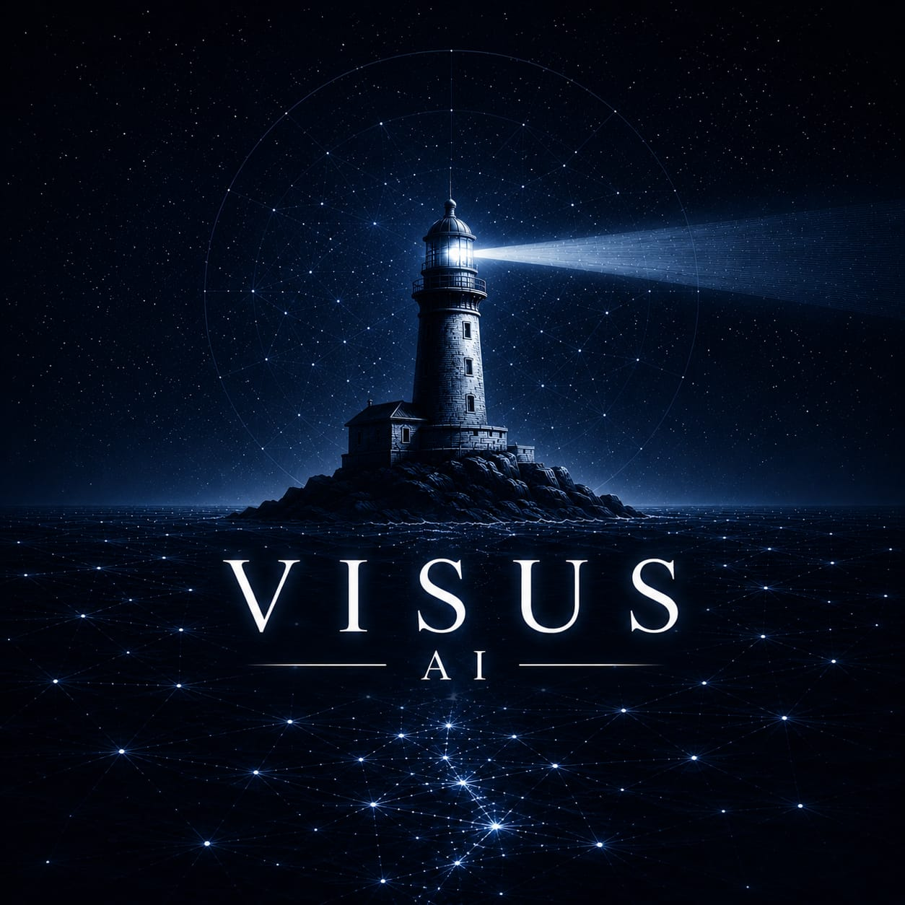
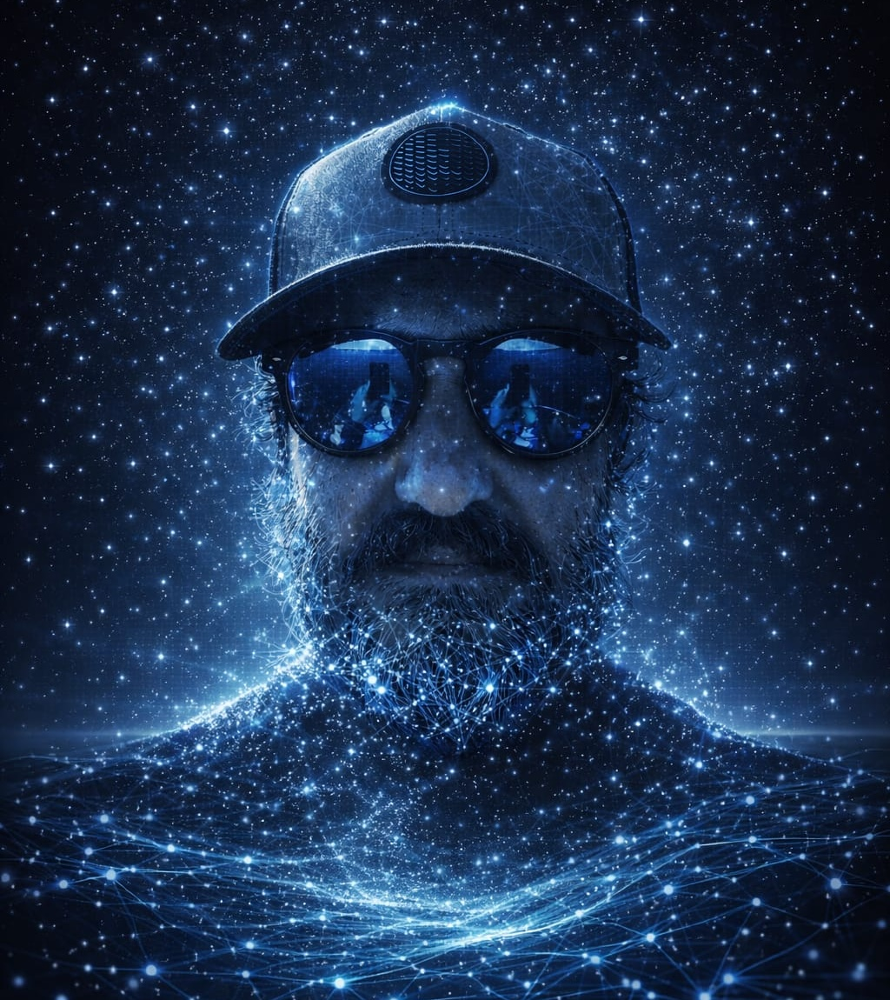

Azure AI Weather
LIVEReal-time coastal weather intelligence for sailors, fishermen and maritime professionals. Powered by AI-driven forecasts and local environmental data.
Launch Azure AI Weather
The front seat for the Front Sea.
FrontSea develops intelligent technologies for the ocean. We combine artificial intelligence, weather intelligence, environmental monitoring and maritime technologies to build tools that help people understand and navigate maritime environments with greater clarity and confidence.
A growing suite of applications designed to bring intelligence to every layer of maritime activity.

Real-time coastal weather intelligence for sailors, fishermen and maritime professionals. Powered by AI-driven forecasts and local environmental data.
Launch Azure AI Weather
Environmental observation and reporting platform for coastal communities. Structured intelligence from citizen science and field observations.

Maritime navigation intelligence combining AIS data, weather conditions and route analysis to support safer passage planning.
Our development trajectory for 2026 and beyond.
Every FrontSea application is connected through an internal operational intelligence layer. This platform centralises the data and intelligence that flows between our products — it is not a public application.
FrontSea Operations is an internal system and is not publicly available.

Founder & Maritime AI
Operations Advisor

AI & Software Engineer
FrontSea Gear will become a sustainable clothing collection designed to support the FrontSea ecosystem. Proceeds will contribute to selected marine conservation initiatives — not as a retail platform, but as a long-term commitment to the ocean we serve.
Our foundational document outlining the vision, approach and long-term direction of FrontSea Intelligence in building ocean intelligence for maritime environments.
Download Blue Paper